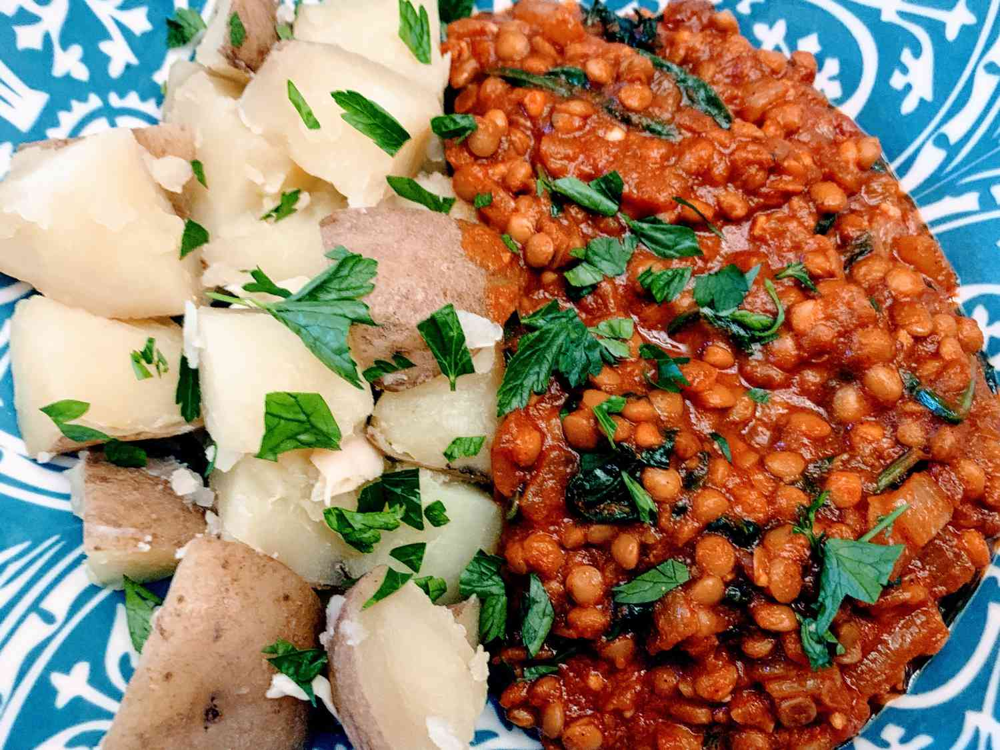

Red Lentil Curry

Description
This red lentil curry is a delicious and hearty vegan dish that is perfect for a cozy dinner
at home. Made with red lentils, coconut milk, and a variety of aromatic spices, this curry
is full of flavor and nutrition. The red lentils cook quickly and provide a creamy base for
the curry, while the coconut milk adds richness and a hint of sweetness.
Serve this curry over a bed of rice or with a side of naan bread for dipping, and garnish
with fresh cilantro and a squeeze of lime juice for a touch of brightness. This curry is
easy to make and can be customized with your choice of vegetables, such as bell peppers,
carrots, and peas. It is a perfect meal for those cold nights when you want something warm
and comforting.
Ingredients
- 2 cups red lentils
- 3 cups water, or more as needed
- 1 tbsp vegetable oil
- 1 large onion, diced
- 2 tbsp curry paste
- 1 tbsp curry powder
- 1 tsp ground turmeric
- 1 tsp ground cumin
- 1 tsp chilli powder
- 1 tsp salt
- 1 tsp white sugar
- 1tsp minced garlic
- 1 tsp minced fresh ginger
- 1 can tomato puree
Steps
- Wash lentils in cold water until water runs clear.
- Put lentils in a pot with enough water to cover; bring to a boil
and reduce heat to medium-low. Cover and simmer, adding water as
needed to keep lentils covered, until tender, 15 to 20 minutes. Drain.
- Heat vegetable oil in a large skillet over medium heat; cook and
stir onions in hot oil until caramelized, about 20 minutes.
- Mix together curry paste, curry powder, turmeric, cumin, chili powder,
salt, sugar, garlic, and ginger in a large bowl; stir into onions. Increase
heat to high and cook, stirring constantly, until fragrant, 1 to 2 minutes.
- Stir in tomato puree and lentils; cook until warmed through.